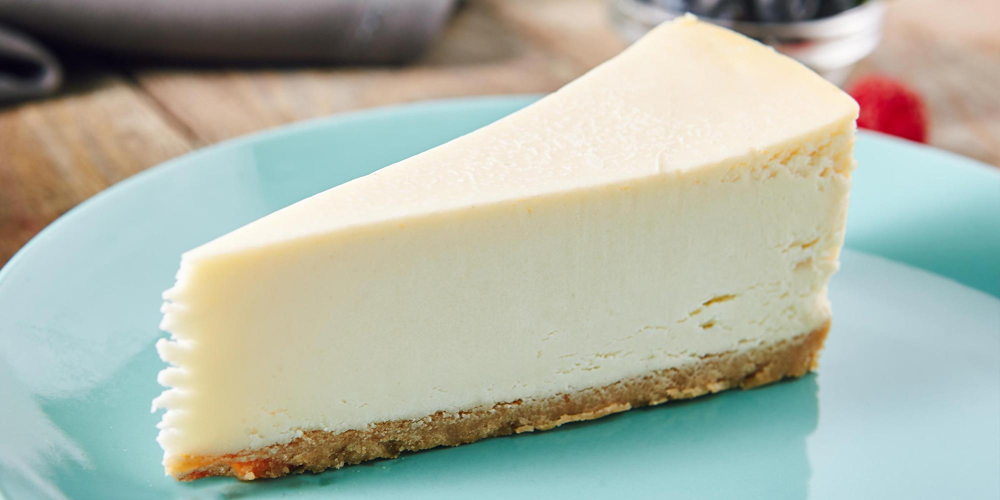

Cheesecake

Description
A very easy and quick recipe to prepare a soft and tasty cheesecake that will blow your mind!
All you are going to need are the following ingredients:
Ingredients
- 300g of chocolate cookies
- 50-100g of butter
- 1 egg
- 250g of cream cheese
- A full tea cup of sugar
Steps
- Crush the chocolate cookies as much as possible, try to leave no solid pieces.
- Melt the butter until it's liquid and mix it with the crushed cookies.
- Mix it with a spoon so all the crushed cookies get mosited with the liquid butter.
- On a separate bowl, mix all the cream cheese with the egg and the full cup of sugar. Mix for 5 minutes.
- Place on a plate the chocolate base, and once it's settled pour the creamy mix on top of it.
- Hit on the oven at mid temperature from the bottom and top for 10 minutes each.
- Let it cool on the fridge for a while.
- Enjoy!